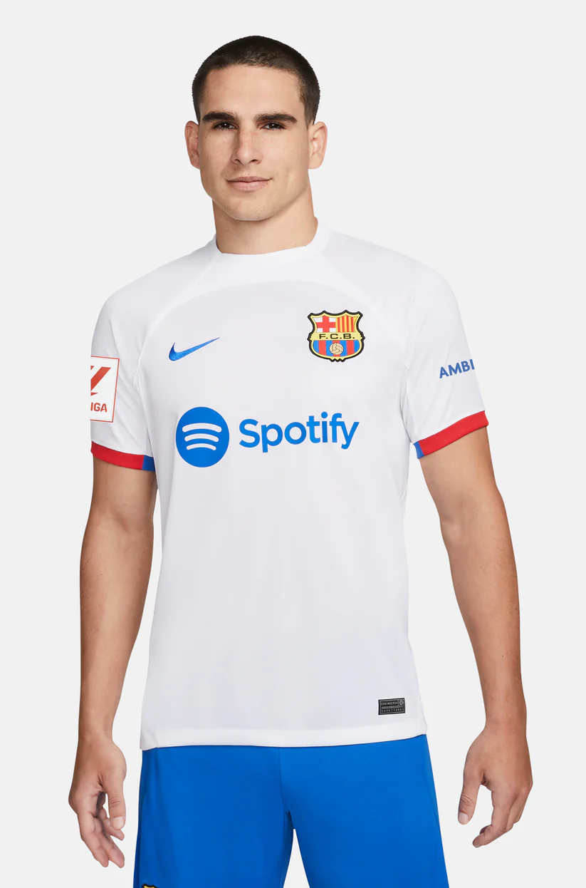
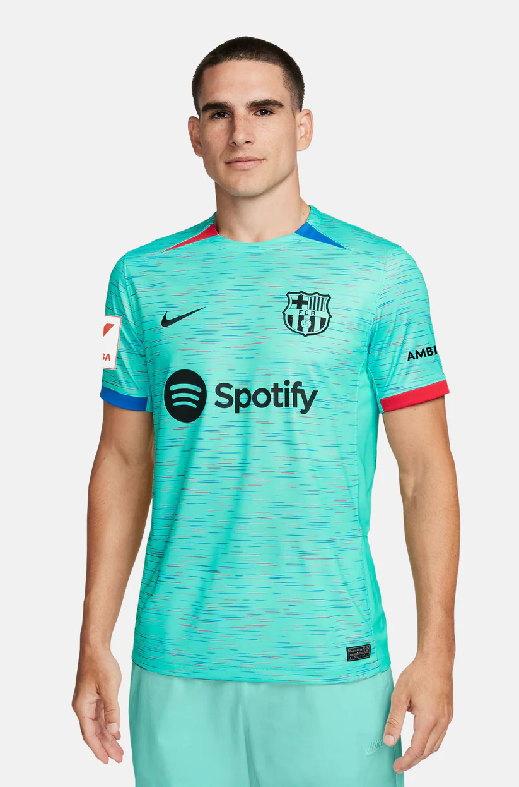
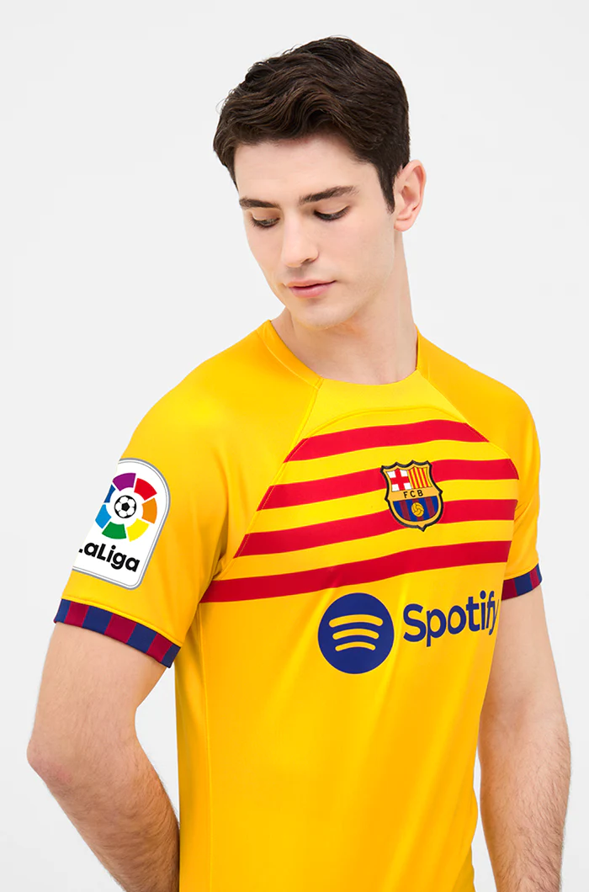
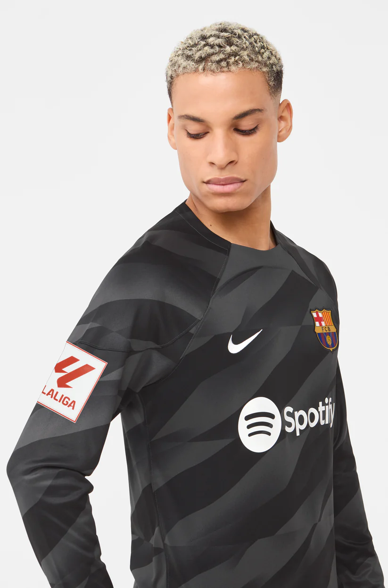

La equipación 23/24 revive las camisetas clásicas con las franjas amplias
y los colores blaugrana originales, con el detalle diferencial de un rombo sublimado por
encima del escudo que representa el
primer equipo femenino de la historia que jugó un partido de fútbol en el Camp Nou.
99,99€
Añadir a mi cesta

La segunda equipación 23/24, que se presenta en el marco de la campaña
lanzada por el Club “Aquí, para abrir camino”, presenta un diseño rompedor que rinde
homenaje a la historia del Barça y a una camiseta que vistió Johan Cruyff, el precursor del
estilo de juego del FC Barcelona.
99,99€
Añadir a mi cesta

La tercera equipación 2023/24 destaca por el protagonismo del color light
aqua, considerado también una expresión de la inspiración y la creatividad. Su diseño pone
de manifiesto todo aquello que forma parte del Barça, de su historia, de su estilo de juego
y de los jóvenes talentos formados en la Masía.
99,99€
Añadir a mi cesta

Camiseta de la 4ª equipación del FC Barcelona 22/23. - Tecnología Nike
Dri-FIT ADV - Tejido de gran elasticidad y secado rápido - 100% poliéster - Color: amarillo
y rojo. El periodo de entrega para este producto es de 7 a 14 días. Este producto no admite
cambios ni devoluciones.
98,95€
Añadir a mi cesta

Tecnología Nike Dri-FIT ADV | Tejido de gran elasticidad y secado rápido
|
100% poliéster | Color: negro.
104,95€
Añadir a mi cesta

Chándal de entrenamiento con el parche del escudo del FC Barcelona y el
logo de Nike bordado a contraste. Tecnología Dri-FIT de Nike. Chaqueta con capucha y cuello
alto. Cierre con cremallera. Bolsillos delanteros con cremallera. Pantalón largo con cintura
elástica con cordones en su interior. Bajos con cremallera. Color: azul marino.
129,99€
Añadir a mi cesta